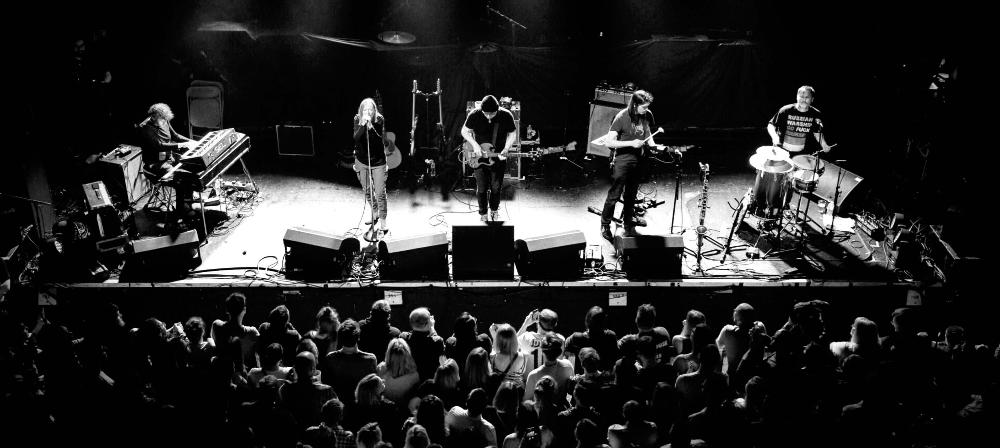

TRIP HOP ARCHIVE
1990s
Roots & rise: Bristol scene, Massive Attack, Portishead, Tricky. Click items to explore photos, short texts, and video links.


2000s
Evolution & hybrids: UNKLE, Thievery Corporation, DJ Shadow tours.


2010s


Archive Video Links